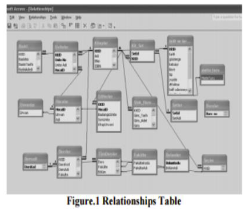
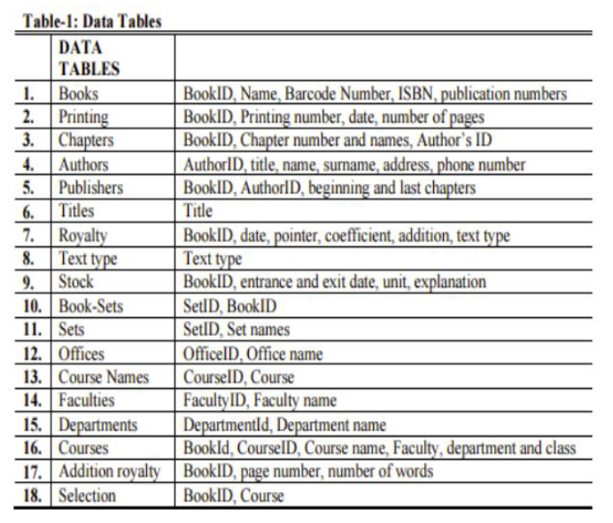
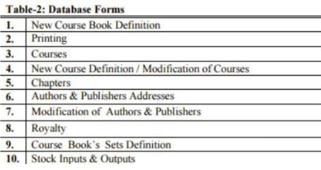
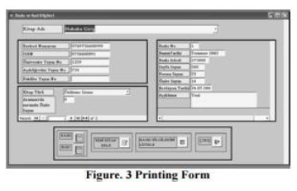

AIM:
To understand the concept of database administration.
PROCEDURE:
1. Select the system / application.
2. Include database administration methods.
3. Design the system for database administration.
INTRODUCTION:
Database administration is the function of managing and maintaining
database management systems (DBMS) software. Mainstream DBMS software such
as Oracle, IBM DB2, and Microsoft SQL Server need ongoing management. As
such, corporations that use DBMS software often hire specialized
information technology personnel called database administrators or
DBAs.
TYPES OF DBAs:
• System DBA
• Development DBA
• Application DBA
SAMPLE CASE STUDY FOR FACULTY OF OPEN EDUCATION:
THE DATA DEFINITION SUBSYSTEM:
The data definition subsystem helps define the structure of the
files in the database. Data tables are designed on relational data tables.
There are eighteen data tables provided by the relational database in this
study (Table-1). In the relational data table, attributes represent
necessary data summarized by the course book’s printing and royalty
departments. The structure of the relational database in this paper is
described.
THE DATA MANIPULATION SUBSYSTEM:
The data manipulation subsystem lets us add and delete records,
change field contents, and view the database. The information in a
database can be viewed by using queries.


The database is opened with the following start-up menu. The user
has the following six main options: creation of necessary records of
book’s characteristics; control of book storage; preparing royalties and
storing personal (authors and publishers) information; and preparing any
kind of reports to see information about books. User can quit the database
by clicking “Programdan Çıkış” command button.
User can add, edit, and delete records by using the following forms
(Table 2):

For example, the “Printing” form includes all the fields necessary
to define course books' printing information. It is used to enter new
printing data into the database. An example of an input data screen is
shown in Figure 3. The user selects the book’s name and fills out the
necessary fields. The user can add a new course book to the database by
clicking the “yeni kitap Ekle” command button. Modifications of existing
data can also be made. The edit and delete operations are identical to the
input data operations and work in the same way. This form also includes
links for reports of printing data.

THE DATABASE ADMINISTRATION SUBSYSTEM:
Storing all course book information in a database has created the
need for managing the database. In the relational database, data integrity
and security are maintained by those who are authorized to use, update,
and delete. The database administration subsystem allows us to establish
users of the database, specify who can update information, and develop
methods for backing up the database and recovering it in the event of a
failure. For example, one form printing department could look at but not
change information relating to the price of royalties.
APPLICATION GENERATION SUBSYSTEM:
The application generation subsystem contains tools that help us
create and update other features such as menus, data entry screen forms,
reports, and application software. This study needs more time to examine
further development of system implementation. For example, new orders can
be taken from users, like new reports and data entry forms.
CONCLUSION:
Until now, there have been no problems with the database. Users can
use it easily without any issues. Everyone related to this data now uses
only one database and can access it easily. By this study, data redundancy
and integrity problems have been solved. Finally, in future studies,
according to this relational database management system, a web-based
system will be constructed.